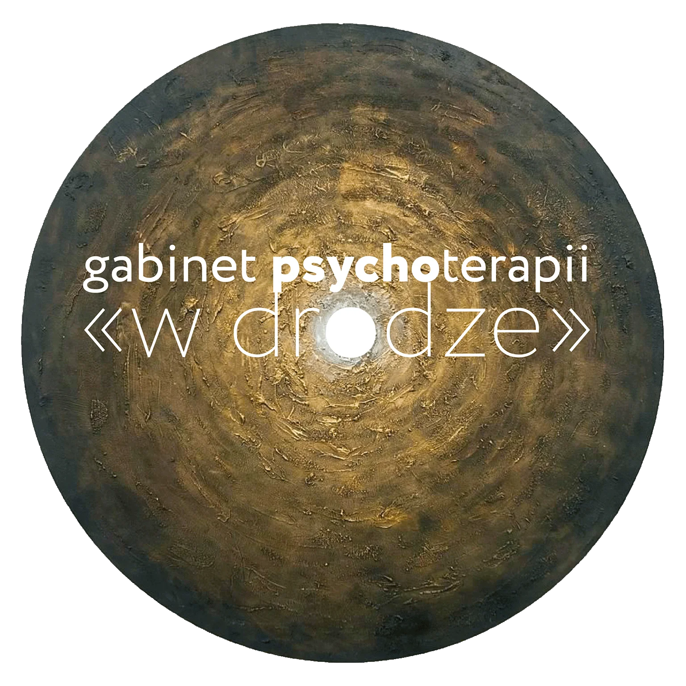

Skrabaczterapia - Profesjonalna Psychoterapia w Opolu - Ewa Skrabacz
O mnie - Ewa Skrabacz, psychoterapeuta w Opolu
Jestem certyfikowanym psychoterapeutą w Opolu, prowadzę psychoterapię indywidualną dla osób dorosłych w nurcie psychodynamicznym. Ukończyłam czteroletnie specjalistyczne szkolenie psychoterapeutyczne w Krakowskim Centrum Psychoterapii, rekomendowane przez Polskie Towarzystwo Psychologiczne oraz Polskie Towarzystwo Psychoterapii Psychodynamicznej.
Moje doświadczenie kliniczne
Doświadczenie w pracy terapeutycznej zdobywałam na Oddziale Zaburzeń Nerwicowych oraz Oddziale Psychogeriatrycznym w 116. Szpitalu Wojskowym w Opolu. Pracowałam również w Poradni Rodzinnej Diecezjalnej Fundacji Ochrony Życia w Opolu, gdzie pomagałam osobom w kryzysach małżeńskich i rodzinnych.
Standardy mojej pracy
Psychoterapię prowadzę zgodnie z Kodeksem etyki psychoterapeuty Polskiego Towarzystwa Psychoterapii Psychodynamicznej, którego jestem członkiem. Swoją pracę regularnie poddaję superwizji klinicznej, co gwarantuje najwyższą jakość oferowanych usług terapeutycznych.
Specjalizacja w interwencji kryzysowej
Jestem również certyfikowanym interwentem kryzysowym po szkoleniu na Uniwersytecie SWPS we Wrocławiu. Posiadam międzynarodowy certyfikat International Critical Incident Stress Foundation (ICISF), co pozwala mi skutecznie pomagać osobom w nagłych kryzysach psychicznych.
Psychoterapia indywidualna w Opolu
Jak wygląda psychoterapia w moim gabinecie?
Psychoterapia w gabinecie Skrabaczterapia ma formę regularnych spotkań twarzą w twarz. Podczas sesji zachęcam pacjentów do swobodnego dzielenia się myślami, uczuciami i skojarzeniami. Wspólnie pracujemy nad zrozumieniem Twojej rzeczywistości wewnętrznej i zewnętrznej, co umożliwia wprowadzanie korzystnych zmian w codziennym życiu.
Komu pomagam? Psychoterapia w Opolu dla osób z:
- ▷ Depresją i obniżonym nastrojem - poczucie pustki, brak radości z życia
- ▷ Zaburzeniami lękowymi - napady paniki, fobie, lęk uogólniony
- ▷ Niskim poczuciem własnej wartości - brak pewności siebie, samokrytyka
- ▷ Problemami w relacjach - trudności w związkach, samotność
- ▷ Objawami psychosomatycznymi - bóle głowy, brzucha, klatki piersiowej bez przyczyn medycznych
- ▷ Zaburzeniami snu - bezsenność, koszmary nocne, lęki nocne
- ▷ Zaburzeniami odżywiania - anoreksja, bulimia, kompulsywne objadanie się
- ▷ Zaburzeniami osobowości - borderline, narcystyczne, unikające
Jak często odbywają się sesje?
Decyzja o rozpoczęciu psychoterapii podejmowana jest po 2-3 spotkaniach konsultacyjnych. Sesje terapeutyczne w gabinecie Skrabaczterapia odbywają się regularnie raz w tygodniu i trwają 50 minut. Regularność spotkań jest kluczowa dla efektywności procesu terapeutycznego.
Interwencja kryzysowa w Opolu - pomoc w nagłych sytuacjach
Czym jest interwencja kryzysowa?
Interwencja kryzysowa to pierwsza pomoc psychologiczna w Opolu dla osób w nagłych, trudnych sytuacjach życiowych. Gdy pojawiają się przytłaczające emocje i poczucie bezradności, pomagam zrozumieć sytuację i odzyskać kontrolę nad własnym życiem.
Kiedy zgłosić się po pomoc kryzysową?
- ▷ Śmierć bliskiej osoby - żałoba, rozpacz, poczucie pustki
- ▷ Doświadczenie przemocy - fizycznej, psychicznej, seksualnej
- ▷ Rozstanie, rozwód - rozpad związku, konflikt rodzinny
- ▷ Diagnoza ciężkiej choroby - własnej lub bliskiej osoby
- ▷ Utrata pracy - zwolnienie, problemy finansowe
- ▷ Wypadek, katastrofa - traumatyczne zdarzenia losowe
- ▷ Myśli samobójcze - gdy życie traci sens
Jak długo trwa pomoc kryzysowa?
Interwencja kryzysowa w gabinecie Skrabaczterapia to pomoc krótkoterminowa - zazwyczaj od 5 do 15 spotkań, w zależności od Twoich potrzeb. Po ustabilizowaniu sytuacji możemy wspólnie zdecydować o kontynuowaniu pracy w formie psychoterapii długoterminowej.
⚡ Potrzebujesz pilnej pomocy psychologicznej w Opolu?
Zadzwoń: 501 580 609
Oferta i cennik - Psychoterapia Opole
Cennik usług psychoterapeutycznych:
Formy płatności: Przelew bankowy lub BLIK
Pierwsza konsultacja to okazja do wzajemnego poznania się i omówienia Twoich potrzeb terapeutycznych.
Wystawiam faktury. Niektóre firmy oferują dofinansowanie psychoterapii dla swoich pracowników - zapytaj w dziale HR.
Najczęściej zadawane pytania o psychoterapię w Opolu
Jak długo trwa psychoterapia?
Długość psychoterapii zależy od indywidualnych potrzeb. Krótkoterminowa terapia może trwać 3-6 miesięcy, podczas gdy praca nad głębszymi problemami często wymaga 1-3 lat regularnych spotkań.
Czy psychoterapia jest skuteczna?
Tak, badania naukowe potwierdzają skuteczność psychoterapii w leczeniu depresji, lęku, zaburzeń osobowości i wielu innych problemów psychicznych. Kluczowe jest zaangażowanie pacjenta i regularne uczestnictwo.
Czym różni się psycholog od psychoterapeuty?
Psychoterapeuta ukończył dodatkowe 4-letnie szkolenie w konkretnej szkole psychoterapii. Psycholog może oferować wsparcie i konsultacje, ale psychoterapia to specjalistyczna forma długoterminowej pomocy.
Jak umówić się na wizytę w Skrabaczterapii?
Zadzwoń pod numer 501 580 609 lub napisz na kontakt@skrabaczterapia.pl. Umówimy dogodny termin pierwszej konsultacji. Gabinet znajduje się w centrum Opola przy ul. Strzelców Bytomskich 7.
Kontakt - Psychoterapia Opole
Skrabaczterapia - Gabinet Psychoterapii
- 501 580 609
- 501 580 609 (WhatsApp)
- kontakt@skrabaczterapia.pl
-
Gabinet Psychoterapii Opole:
ul. Strzelców Bytomskich 7
45-084 Opole
(centrum miasta, dobry dojazd komunikacją miejską)
Godziny przyjęć:
Poniedziałek - Piątek: 8:00 - 20:00
Terminy ustalane indywidualnie